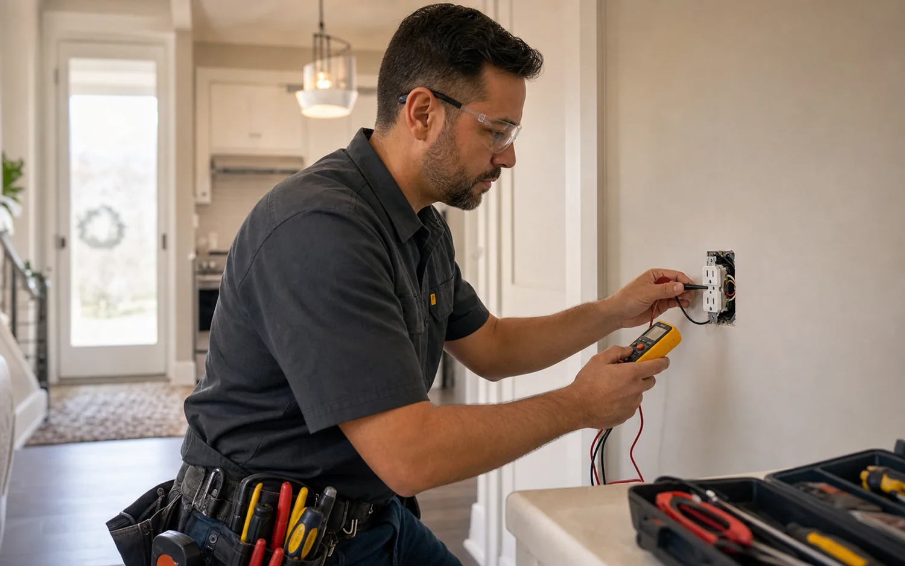
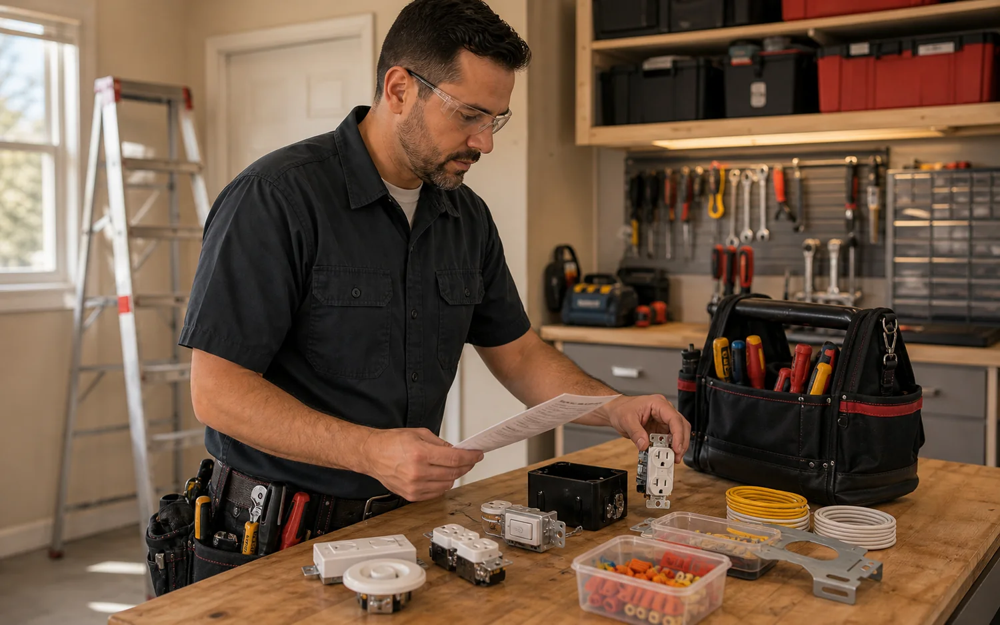

Request intake
The customer provides affected rooms, recent changes, photos, breaker labels, device type, fixture model if available, and whether symptoms are constant or intermittent.
Home electrical requests work best when symptoms, rooms, devices, panel access, and desired upgrades are captured clearly before a provider visit. VoltWise helps organize those details for outlet repair, fixture work, circuit additions, safety corrections, and everyday troubleshooting.

Residential work is usually a mix of comfort, safety, reliability, and new equipment needs. These requests are separated so the assigned provider can bring the right parts, testers, ladders, boxes, and wiring approach.

A dead outlet may be a failed receptacle, a tripped GFCI upstream, a loose conductor, a shared circuit issue, or a panel-side problem. The request should capture what stopped working, whether any breaker tripped, what was recently plugged in, and whether heat, smell, buzzing, or discoloration is present.
A provider may arrive with receptacles, GFCI/AFCI devices, dimmers, fan-rated boxes, wire connectors, fixture hardware, testers, labels, and basic repair parts. The useful intake details are device location, age of the home, panel access, photos of the affected area, fixture model, and whether the issue changed after storms, appliance use, or recent renovations.

The exact method depends on the building, equipment, local code, and provider judgment, but these are the practical checkpoints that make the request clearer.
The customer provides affected rooms, recent changes, photos, breaker labels, device type, fixture model if available, and whether symptoms are constant or intermittent.
Providers commonly use multimeters, receptacle testers, continuity checks, non-contact verification where appropriate, and controlled breaker isolation before replacing parts.
Work may involve proper device termination, box fill review, wire protection, torque-aware connections, fixture support, and replacement parts rated for the location and load.
The provider confirms what changed, what remains recommended, whether permits or inspection are needed, and which circuits, devices, or fixtures were affected.
Electrical requirements vary by jurisdiction and property type. These pages describe common coordination needs; the independent provider confirms the enforceable requirements for the actual site.
Photos, symptoms, panel access, service group, timing, and property type help the first provider call become more useful.